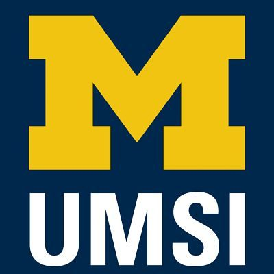
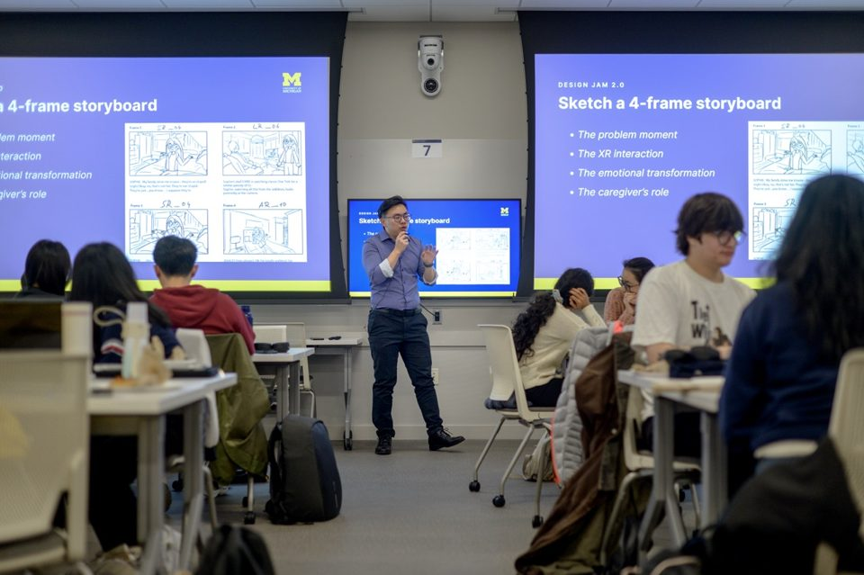

Before you meet
Use these examples to introduce your team, explain your goals, and arrange a first conversation.

Engaged Learning Office
Student Resources
UMSI / Engaged Learning
Start with clear expectations, shared goals, and a productive first meeting.

A successful kickoff gives the student team and partner a shared understanding of the work before research and active execution begin. Use the meeting to listen, clarify questions, and confirm how everyone will work together.
Send a concise follow-up that records what the team heard, what was decided, and what still needs clarification. This creates a professional starting point and gives the partner an opportunity to correct misunderstandings before the project moves forward.
Start with outreach, then bring an agenda and draft scope to review with your partner.
Use these examples to introduce your team, explain your goals, and arrange a first conversation.
Initial Client Meeting Sample Agenda
Adapt the agenda to discuss responsibilities, scope, communication, and next steps.
Ginsberg Center Campus-Community Partnerships Toolkit
Review principles for reciprocal, respectful partnerships before confirming expectations with your client.